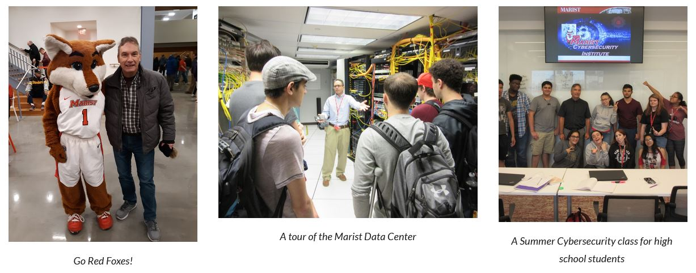
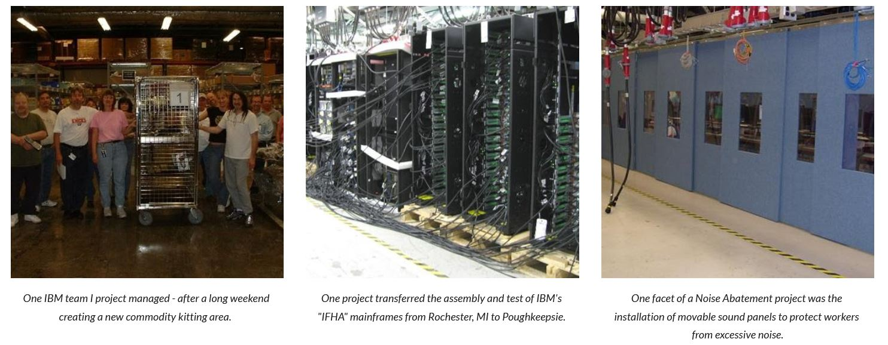

I became an adjunct lecturer at Marist in 2015, teaching courses in Data Communications, Information Privacy and Security, and Internetworking.
In 2019 I joined the full time faculty of the Computer Science department. I also teach Intro to Cybersecurity and
Software Development II.

My IT career began at IBM Poughkeepsie as a Manufacturing Engineer writing mainframe computer diagnostics. Throughout the years I developed new skills and expanded my education, adding new roles to my resume: programmer, application architect, technical writer, team leader, process developer, and project manager.

Some pre-Marist Career Highlights:
- Designed, coded and supported two world-wide floor support systems responsible for tracking inventory and assuring all parts were adequately tested prior to shipment.
- Project managed the design, build and support for two clean rooms. Project managed building infrastructure and construction changes due to new power and cooling
requirements of IBM's z10 mainframes.
- Project managed the development and implementation of a multifaceted noise abatement for the z10 mainframe test area. The team designed new noise baffles, instituted acoustic level testing, provided training, developed special mainframe enclosures, and implemented several other changes to reduce noise levels to a safe standard.
- Project managed the transfer of assembly/test operations of IBM's multi-frame "iFHA" power mainframe from IBM Rochester to IBM Poughkeepsie, and the transfer of building power and frames from IBM to the JABIL Corporation.
- Project managed the migration of one worldwide floor tracking system (C-LOG) into another IBM system (MFS), a multi-million dollar effort involving several IBM sites.
- Key member of the team responsible for IBM Poughkeepsie receiving OSHA's Voluntary Protection Program "STAR" award
- Published Technical Paper for "Passive Deflector for Noise Abatement for Mainframe Computers Baffle" and submitted technical paper for "C-LOG - Commodity Logistics Tracking Software"
- Received two IBM Outstanding Technical Achievement Awards.